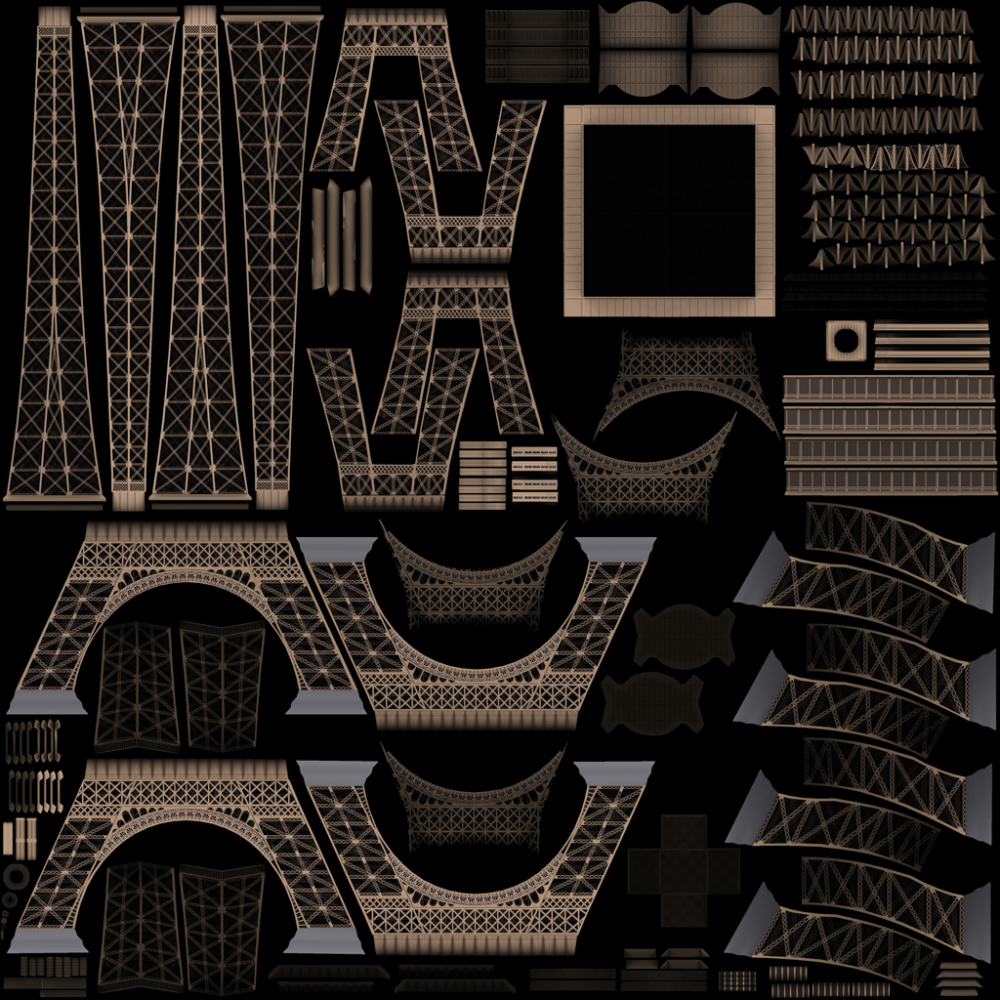
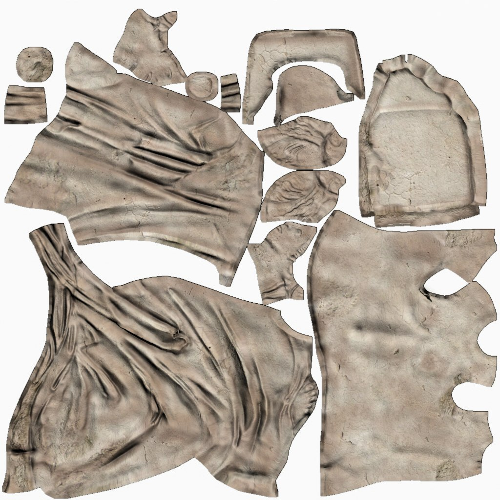
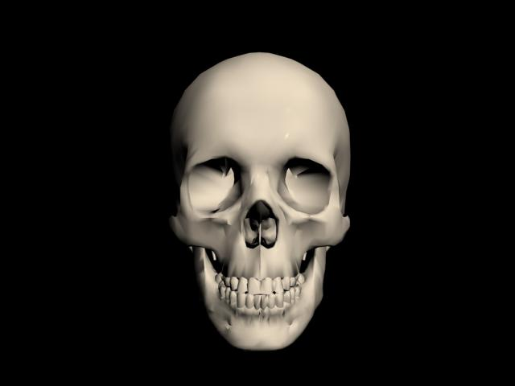
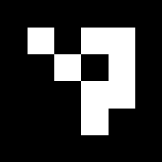
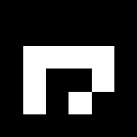
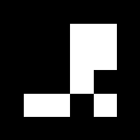

O que o sistema faz
O ArUco AR é uma aplicação de Realidade Aumentada que, a cada frame da webcam:
1. Detecta marcadores
Encontra marcadores ArUco impressos no campo de visão da câmera usando o detector da OpenCV.
2. Estima a pose 3D
Calcula posição e rotação do marcador no espaço com solvePnP, a partir dos cantos detectados.
3. Seleciona o objeto
Mapeia o ID do marcador para o modelo 3D correspondente via uma hierarquia polimórfica de classes.
4. Renderiza em wireframe
Projeta os vértices do modelo no plano da câmera com projectPoints e desenha as arestas dos triângulos.
Catálogo de modelos
Cada marcador ArUco está vinculado a um modelo 3D distinto carregado via Assimp:



Marcadores ArUco
Os marcadores são gerados pelo utilitário generate_markers a partir do dicionário DICT_4X4_50 da OpenCV. Para testar, basta imprimir ou exibir os PNGs e apontar a câmera:

ID 0
→ Torre Eiffel

ID 1
→ Estátua

ID 2
→ Crânio
Arquitetura — POO em ação
A aplicação é organizada em torno de uma hierarquia de classes que isola o que é comum (carregar um modelo) do que é específico (como cada modelo é desenhado):
ObjetoAR (classe base abstrata — define render() virtual puro)
│
├── ObjetoHistoria (abstrata — carrega modelo via Assimp)
│ ├── TorreEiffelAR (ID 0)
│ └── EstatuaAR (ID 1)
│
└── ObjetoAnatomia (abstrata — análoga, domínio anatômico)
└── CranioAR (ID 2)
GerenciadorAR (mapeia ID do marcador → ObjetoAR*)
O main não conhece nenhuma das classes concretas — trabalha apenas com ponteiros para ObjetoAR e o polimorfismo dinâmico do C++ escolhe o render() certo:
ObjetoAR* objeto = gerenciador.getObjeto(ids[i]);
if (objeto != nullptr) {
objeto->render(frame, cameraMatrix, distCoeffs, rvec, tvec);
}
Adicionar um novo modelo (digamos, um coração humano) significa apenas criar uma subclasse concreta e registrá-la no GerenciadorAR — sem tocar no main. Mais detalhes no relatório.
Vídeo demonstrativo
Vídeo demonstrativo no YouTube — assistir aqui.
Como rodar
Com OpenCV 4 (com contrib) e Assimp instalados via vcpkg, basta compilar com CMake:
mkdir build && cd build
cmake .. -DCMAKE_TOOLCHAIN_FILE="C:/vcpkg/scripts/buildsystems/vcpkg.cmake"
cmake --build . --config Release
.\Release\generate_markers.exe # gera os PNGs em markers/
.\Release\aruco_ar.exe # abre a webcam e roda
Instruções completas no SETUP.md.
Links
- Código: github.com/luizmiguelgr/open-cv-aruco-ar
- Relatório (Markdown): RELATORIO.md
- Vídeo no YouTube: [LINK YOUTUBE]